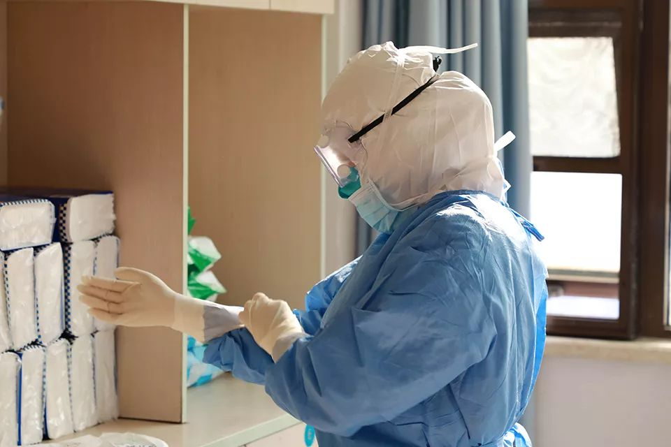

口罩为什么会短缺？
原文链接 备份链接 《人物》记者向多位寻求捐赠的医护人员咨询，他们均表示，很多医院的医用外科口罩库存量大概在一个星期左右，「平常有时口罩也戴一天，如果不去视察病房，有的科室没有戴口罩的需求。」用得不多、存量少，脆弱的库存和供应系统很快被疫 …

*************▲*************1月30日，海军军医大学医疗队三病区医护人员正在穿戴防护用具。（新华社 陈晨/图）
全文共*3590*字，阅读大约需要7分钟。
钟南山表态的前两天，政府部门连夜召集各家医院的领导开会。医院领导回来后就跟我说，疫情就在眼前了，要求我马上开始再采购物资。
听说周边地方的一些医院物资实在紧急，还有直接开着120急救车去接货的。
医护人员带一些口罩给家人也可以理解，我的儿子也叫我拿口罩回家，我没带他还生了我的气。
这些年来，几乎所有医院都在强调控制成本、强调物资的周转率，减少耗材报损。我们平时每个月的采购计划是按过去20个月的平均用量再上浮一点拟定的。
本文首发于南方周末 未经授权 不得转载
文 | 南方周末记者 张笛扬
责任编辑 | 吴筱羽
刘猛（化名）在湖北随州市一家二级甲等医院负责医用物资、药品的采购，他所在的医院是随州七家定点救治新型冠状病毒感染的肺炎患者的医院之一。
相较武汉而言，随州市的医疗资源薄弱许多，随州市公布的七家定点救治医院，仅有两家为三甲医院，其他都为二级甲等医院。
随州距离武汉约一百五十公里，截至2020年1月31日7时，随州市公布的确诊病例有228例。随着疫情的发展，湖北省内不少医院物资告急，刘猛所在的医院也不例外。
以下为刘猛的自述。
1
本来春节前我们已经备了很多物资了，但没想到疫情来得这么凶猛，那些物资远远不够了。
按照我们做医疗物资采购的规律，平时每月都会做一次采购，储备一个月所需的物资，但是每年过年前，我们都会进行一次大批量的采购，至少备齐两个月的物资，因为很多供应商和物流都要放假，过了正月十五才会开始供货，再加上每年过年期间都是流感的高发季，呼吸系统疾病的患者会增多。这是我们必须考虑到的。
去年腊月二十五（2020年1月19日）之前，我们基本上完成了年前的采购，物资和药品也陆续送到了医院。当时备货和疫情还没有关系，属于日常采购。但我们当时主要采购的都是药品，对防护用品采购的不多，觉得只要够用就行，院里的各类口罩当时还剩近两万个，这已经是我们平时两个多月的用量了，我觉得已经够了。
1月20日晚上，钟南山对外宣布新型冠状病毒感染的肺炎肯定存在人传人的现象，是这次疫情防控转折的标志，公众基本都是在此之后才知道此次疫情的严重性，包括我们医院也是。那天开始，我们给医生提升了防护等级，而涌入医院发热门诊的患者也自那时开始变多。
政府部门提醒我们医院应对疫情的时间要比钟南山表态稍早一点。我记得是钟南山表态的前两天，政府部门连夜召集各家医院的领导开会，要求做好疫情的防控工作。医院领导回来后就跟我说，疫情就在眼前了，要求我马上开始再采购物资，保障医院应对疫情期间的物资供应。
之后那几天基本上天天都要开会，医院里成立了四个专班，有诊治专班、防控专班、宣传专班，还有就是物资供应专班，负责采购防护用品、消杀用品以及药品。疫情越来越严重，辛苦的不仅是一线的医生，医院里几乎所有人，包括我们负责物资采购的科室都绷紧了神经。
从那天之后，我们采购就一直没有停过，一天24小时电话不断地响。不管是腊月二十九、除夕还是正月初一、初二，所有平时和我们医院有业务联系的公司，我都挨个打电话让他们供应物资。但很多公司不经营防护用品，只经营药品或者耗材。
我们平时采购物资都是从本地的经销商那里购买的，他们从生产商那里拿货。一开始，为数不多经营防护用品的公司也都表示了难处，因为他们那里储存的物资数量也都不多，有的工厂已经放假了，物流也停了，拿着钱也买不到。
省内各家医院都在赶忙采购物资，当时我们联系上经销商，听说他们那里还有货，我再打电话给院领导请示一下要买多少，再过十分钟打过去，那些货就已经被其他医院抢走了。
后来随着疫情越来越严重，湖北省内不少生产防护用品的厂家紧急开工，我们了解到之后，一直在向经销商打电话催物资。院长比我更急，他每次都要我给他准确答复，问我口罩、防护服什么时候能到，但经销商也没法给我准确答复，有时候我们订的货虽然已经上路，但我们不一定能拿到手。
2
能抢到一点物资不容易，尤其是现在湖北多地都“封城”了，对物资的运送产生了不小的影响。生产防护用品的厂家主要在仙桃和咸宁，很多我们预定的物资被送到了孝感或者其他高速公路服务区，运货的车再往前走也进不了城了。
包括随州市内也是这样，很多交通要道都被堆上了渣土，需要通关证才能通行。我们医院会联系市里的防控指挥部，拿到指挥部发放的通关证，交给经销商，他们再去高速服务区提货。
这时候，很多经销商都会去抢货，很可能谁先到谁就抢到了。生产商一趟车可能会拉过来好几家公司订的货，有的公司可能本来只订了五千只口罩，但他先到了，看到货多，就先拿了，又不是不给钱。我们可能本来订了一万个口罩，等到经销商拉回来就没那么多了。听说周边地方的一些医院物资实在紧急，还有直接开着120急救车去接货的。
现在，经销商们为了自己订的物资不被抢，都专门提前开车到高速服务区等运货的车来，现在省内各地交通的管制情况也不一样，运货的车也说不好什么时候能到，经销商们有时一等就是大半天。
疫情暴发后，我们紧急采购的用品中，最早到的是一批防护服。春节前的一天晚上，我们院里有一个病人经过检查，高度疑似新型冠状病毒感染的肺炎，担心医生被传染，我马上给经销商打电话，那时经销商刚下高速把货拉到市区，我让他们马上送到医院来。
那一次采购的防护服共五十套，第二天就全部分完了。之前医院还剩的近两万个口罩也三天就用完了，现在我们不仅要给医护发口罩，前来就诊的患者也要给他们无偿发放。
当然，有些口罩可能是医护人员多拿了一些给了家人或者朋友，现在市场上已经很难买到口罩了。几天前口罩有些紧张，我曾专门排查了一次，根据登记表上各个科室的领取数量，让一些领得多的科室将口罩退出来，发给治疗发热病人的一线科室。医护人员带一些口罩给家人也可以理解，我的儿子也叫我拿口罩回家，我没带他还生了我的气。
这次病毒的传染性强，我们之前根本没有遇到过这种情况。除了医护人员、病人要防护，我们还要向社区诊所、乡村医生发放防护用品，所以需要的量大了。政府部门给我们调拨了一批口罩，是无偿提供的，但这部分口罩不仅供给我们医院，政府机关有防疫执勤任务需要的，也都会来医院领口罩。
算下来，最近几天消耗的各类口罩已经比我们医院过去一年使用的还要多了。疫情暴发前我们医院每个月使用的各类口罩还不到一万只，而这一周，我们已经用了近5万只了。
其中一些防护级别较高的用品，我们这一周采购的数量甚至超过了过去好几年采购的量。像N95口罩、防护服这样的防护用品，我们过去很少用到，常备的都是一次性口罩和一次性手术衣。N95口罩近三年我们医院一共使用了不到100只，这几天就用了至少600只。医用外科口罩平时也用得少，过去两年我们医院只用了一千多只，最近几天就已经用了四千多只。
疫情暴发后，我们每天晚上都要统计物资的库存量，即是为了安排各科室第二天的使用，也要把数据上报给政府部门。政府部门调拨的物资是我们医院开车去取货的，医护人员向我们反映，我们自己采购的防护用品要比政府调拨的质量过硬一些。
3
现在湖北省内大大小小的医院物资都很紧张，甚至不少外地的医院也开始紧张，不少医院都向社会公开募捐。最近有人向我们捐赠了2000个一次性口罩，是符合国家标准的，我们就直接投入使用了。也有公益机构联系上我，问我哪些物资比较紧缺，我提供了数字，已经过了好几天了，也不知道什么时候可以到位。
有些小医院物资更加紧缺，乡镇卫生院、社区医院的情况就更严重。最近就有几家小医院想找我们借防护用品，我确实借不了，我们自己的都很紧张。
目前我们医院主要缺的是医用外科口罩，院里还剩几百个，一直没敢发完，每天只给发热门诊配发，别的科室都只发医用护理口罩。医用外科口罩现在也很难采购，很多供应商声称有货，但是他们的货都没达到国家标准，我们不敢买，更不敢用。
如果省着用，现在医院的库存情况还够用一周，我们现在每天给医护发一个口罩，治疗发热病人的一线科室，就发N95口罩或医用外科口罩，其他科室只发一次性口罩。接下来的每天都得不断继续采购，目标是要至少备齐两周的用量。
这些年来，几乎所有医院都在强调控制成本、强调物资的周转率，减少耗材报损。我们平时每个月的采购计划是按过去20个月的平均用量再上浮一点拟定的。此外，我们医院不会有规模地储备口罩、防护服等防护用品，只用按照用量定期采购。
不瞒你说，我们医院现在用的一批医用外科口罩还剩不到一个月就过保质期，医用产品一般在保质期前一个月就算报损。三年前我们采购了近一千个医用外科口罩，三年都没用完，这让医院怎么敢多订呢？
为了控制成本，减少报损，医院制定了制度，要求定期统计耗材报损的数量、金额，如果报损率超过了0.3%，那负责采购的人员就得受到处罚。
此外，几乎所有的医院，营收都主要用在了扩张、建设上，各家医院都想提高自己的档次、扩大服务人群，我们医院也是如此。这就导致了医院的采购资金普遍不是很宽裕。有经销商曾向我抱怨，很多大医院拖欠采购资金长达10个月。我们医院算比较好的，最困难的时候也只拖欠过6个月。
好在疫情暴发后，医院的采购思路发生了变化。省委书记蒋超良提出“宁可备而不用，不可用而不备”，医院领导也要求我备足各类物资，他说到时候就算浪费了也不追究我的责任。
这一次疫情也是正好赶上了年关，工厂的生产储配和物流都不太顺畅。现在各级政府都开始重视起来，工厂都在加大马力供应，物流也在恢复正常，我相信物资短缺情况会慢慢得到缓解。
当然了，如果相关部门在疫情暴发前能够早些研判，早点提醒我们采购，那么现在的情况也许会更好一点。

征集

《南方周末》现向所有身处新冠肺炎一线的读者公开征集新闻线索。我们欢迎武汉及周边城市医患联系记者，提供防疫前线的一手资讯，讲述您的新春疫情见闻。若您不在武汉，但您身处之所也有与疫情相关的重要新闻线索，亦欢迎您与我们分享。疫情仍在蔓延，南方周末将执笔记录每位国人在疫情面前的希望与困境，与广大读者共同面对疫情。祝愿所有读者朋友们，新春平安。线索可直接给本篇文章留言，格式为：【线索】+内容+您的电话（绝对会对您的个人信息保密）
戳击下面图片 继续阅读专题


原文链接 备份链接 《人物》记者向多位寻求捐赠的医护人员咨询，他们均表示，很多医院的医用外科口罩库存量大概在一个星期左右，「平常有时口罩也戴一天，如果不去视察病房，有的科室没有戴口罩的需求。」用得不多、存量少，脆弱的库存和供应系统很快被疫 …
原文链接 备份链接 来源：腾讯新闻《潜望》 栏目 作者：张珺 从北上广深等城市筹集善款到口罩、防护服发放到医生护士手中，需要经历多少难关？ 1月初开始新型冠状病毒席卷中国，商业公司、基金会、普通民众、海外华侨留学生，捐赠速度空前。包括企业 …
原文链接 备份链接 武安医生（化名）所在的医院是孝感市三家抗疫医院之一。距离武汉66公里的孝感是距离武汉最近的地级市，截止到1月28日上午，有确诊病例173例。与暴风眼武汉一样，以孝感为代表的武汉周边小城也正在经历着决战时刻。 坐诊之 …
原文链接 备份链接 新型冠状病毒疫情像是一场突如其来的阴霾，在这个冬天笼罩了华中大地。相较于最受关注的武汉市民，周边城市的人们，像是处在阴霾边缘，遭受侵袭，却又不常被看见。面对重重困难，孝感、黄冈、黄石、信阳、荆州、天门……各个城市的百姓 …
原文链接 备份链接 自新型肺炎疫情爆发以来，湖北乃至全国多个省份的医院因防疫物资短缺，向社会发出求助。而另一种声音却在说防疫物资是充足的，没有短缺。一时之间，防疫物资成为了薛定谔的猫。 今日来信的这位作者，便是自发为一线医院筹集防疫物资的 …